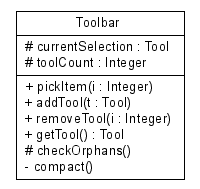

Last change: Tuesday, November 27, 2007 9:46 am
Last change: Tuesday, November 27, 2007 9:46 am
Unless otherwise expressly stated, all original material on this page created by Diomidis Spinellis is licensed under a Creative Commons Attribution-Share Alike 3.0 Greece License.
/**
* Attribute and operation visility
* UML User Guide p. 123
*
* @opt operations
* @opt attributes
* @opt types
* @opt visibility
* @hidden
*/
class UMLOptions {}
/** @hidden */
class Tool {}
class Toolbar {
protected Tool currentSelection;
protected Integer toolCount;
public void pickItem(Integer i) {}
public void addTool(Tool t) {}
public void removeTool(Integer i) {}
public Tool getTool() {}
protected void checkOrphans() {}
private void compact() {}
}
|  |
| Contents | « Previous Next (Class Diagram Example: Association Types) » |
Last change: Tuesday, November 27, 2007 9:46 am
Unless otherwise expressly stated, all original material on this page
created by Diomidis Spinellis is licensed under a
Creative Commons Attribution-Share Alike 3.0 Greece License.